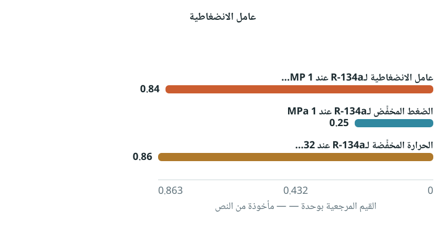

عامل الانضغاطية
Compressibility Factor
نسبة الحجم الفعلي للغاز إلى الحجم الذي يتوقعه نموذج الغاز المثالي عند الظرف نفسه؛ تساوي واحدًا للغاز المثالي وتنحرف عنه فيزيائياً تحت الضغط العالي وقرب التشبع.
عامل الانضغاطية Z يقيس انحراف الغاز الحقيقي عن سلوك الغاز المثالي، ويُعرَّف Z = v/(R·T/P) = P·v/(R·T)، فيكون الحجم النوعي الفعلي v = Z·v_ideal. يعرضه Çengel في قسم خواص الغازات، ويُقرأ من المخطط المعمّم بعد حساب الضغط المخفَّض P_R = P/P_cr والحرارة المخفَّضة T_R = T/T_cr، وهي قاعدة الحالات المتقابلة.
مثال رقمي موثّق: R-134a عند 1 MPa و323 K، وبثابت غاز R = 8.3145/102.03 = 0.08149 kJ/(kg·K). الحجم المثالي 0.08149×323/1000 = 0.02632 م³/كغ. والضغطان المخفَّضان: P_R = 1/4.059 = 0.2464 وT_R = 323/374.2 = 0.8632. يقرأ المخطط Z = 0.84، فيكون الحجم الفعلي 0.84×0.02632 = 0.02211 م³/كغ. والقيمة الجدولية عند هذا الظرف 0.02180 م³/كغ، فنسبة الحجم المثالي إليها 0.02632/0.02180 = 1.207 أي خطأ 20.8%، وهو الرقم الذي يورده الكتاب.
معنى الانحراف: Z أصغر من واحد يعني أن الحجم الفعلي أقل من المثالي، أي أن قوى التجاذب بين الجزيئات تقرّبها. وZ أكبر من واحد يعني أن الحجم المستبعد للجزيئات يغلب التجاذب. وحين يبتعد Z عن الواحد لا يصلح النموذج المثالي في حساسية التصميم، ويجب استعمال مخطط أو معادلة حالة.
كيف تعمل الظاهرة؟
الغاز المثالي يفترض جزيئات نقطية بلا حجم ولا تفاعل، فينتج v = R·T/P. الجزيئات الحقيقية لها حجم مستبعد يقلل الفضاء المتاح فترفع Z فوق الواحد، ولها قوى تجاذب تخفّف ضغط الاصطدام على الجدار فتُخفض Z تحت الواحد. عند ضغط منخفض تكون المسافات كبيرة والتجاذب ضعيفًا فيقترب Z من الواحد. وعند ضغط متوسط يغلب التجاذب فينخفض Z إلى قاع المنحنى. وعند ضغط عالٍ يقترب الجزيء من جاره فيغلب الحجم المستبعد فيرتفع Z فوق الواحد. ولأن هذه القوى تعتمد على نسبة الضغط إلى ضغطه الحرج لا على الضغط المطلق، تُطوى كل الغازات على منحنى واحد تقريبًا بدلالة P_R وT_R، وهي قاعدة الحالات المتقابلة التي يقوم عليها المخطط المعمّم.
العلاقة بالأرقام
الخطوات: (1) R = R_u/M = 8.3145/102.03 = 0.08149 kJ/(kg·K) لـR-134a. (2) v_ideal = R·T/P = 0.08149×323/1000 = 0.02632 م³/كغ (القسمة على 1000 لتحويل kPa إلى MPa). (3) P_R = 1/4.059 = 0.2464؛ T_R = 323/374.2 = 0.8632. (4) من المخطط Z = 0.84. (5) v = Z·v_ideal = 0.84×0.02632 = 0.02211 م³/كغ. (6) الخطأ مقابل القيمة الجدولية 0.02180: 0.02632/0.02180 − 1 = 0.2074 أي 20.7% قبل تقريب، و20.8% بالرقم الذي يورده Çengel. (7) الخطأ الناتج عن تقريب Z من 0.8282 (المطابق للقيمة الجدولية) إلى 0.84 هو 0.84/0.8282 − 1 = 1.4% في الحجم، وهو هامش قراءة المخطط. (8) القاعدة العملية: عند P_R < 0.1 يكون |Z−1| < 1% فيُقبل النموذج المثالي.
مفاهيم متقاربة
الخلط الأول والأشيع: «عامل الانضغاطية» مقابل «قابلية الانضغاط». الأول Z = Pv/RT مقدار لا بُعدي نحو الواحد، والثاني β = −(1/v)(∂v/∂P) بوحدة 1/Pa وقيمته للماء نحو 4.5×10⁻¹⁰. الخلط الثاني: مع ثابت الغاز، فالثابت لا يتغير بالظرف وZ يتغير به. الخلط الثالث: مع الكثافة، فالكثافة نتيجة لا مقياس انحراف. الخلط الرابع: مع الضغط المخفَّض، وهو نسبة تُدخل إلى المخطط لا تُقرأ منه. الخلط الخامس: مع معامل الانضغاط في معادلات الحالة الصريحة، وهو المعامل نفسه لكن يُحسب من معادلة لا من مخطط، فتختلف الدقة لا المعنى.
حدود التطبيق
المخطط المعمّم تقريبي بطبعه: دقته في حدود 2–5% للغازات البسيطة، ويسوء عند النقطة الحرجة حيث يتباعد سلوك الغازات ويصير الانحراف كبيرًا. ولا يصلح للغازات القطبية أو المرتبطة بروابط هيدروجينية (الماء والأمونيا والكحولات) إلا بمخططات خاصة، لأن قاعدة الحالات المتقابلة تفترض تشابهًا في القوى الجزيئية. ويحتاج المخاليط إلى حرارة وضغط حرجين كاذبين بقاعدة خلط مثل قاعدة كاي، وهي تقريب آخر. والغازات الكمومية (الهيدروجين والهيليوم والنيون) تحتاج تصحيحًا عند الحرارة المنخفضة لأن سلوكها لا يتبع المخطط نفسه. وأخيرًا، Z لا يقول شيئًا عن الحرارة النوعية ولا عن الإنتروبيا؛ حساباتهما تحتاج مركبات الانحراف لا Z وحده.

| الكمية | القيمة | المصدر |
|---|---|---|
| عامل الانضغاطية لـR-134a عند 1 MPa و323 K | 0.84 — | [1] |
| الضغط المخفَّض لـR-134a عند 1 MPa | 0.2464 — | [1] |
| الحرارة المخفَّضة لـR-134a عند 323 K | 0.8632 — | [1] |
| ثابت الغاز لـR-134a | 0.08149 kJ/(kg·K) | [1] |
| الحجم النوعي المثالي لـR-134a عند 1 MPa و323 K | 0.02632 m³/kg | [1] |
| الحجم النوعي الفعلي عند Z = 0.84 | 0.02211 m³/kg | [1] |
| خطأ تقدير الغاز المثالي مقابل القيمة الجدولية 0.02180 | 20.8 % | [1] |
| خطأ تقريب Z من 0.8282 إلى 0.84 | 1.4 % | [1] |
المصادر
استشهد بهذا المصطلح
الصيغتان مبنيتان من بيانات الصفحة نفسها: العنوان والتاريخ ورابط النسخة المنشورة.
عامل الانضغاطية — Compressibility Factor. (2026). ديوان المعرفة — انفراد. https://infiradev.com/diwan/terms/term-compressibility-factor.html
@misc{term-compressibility-factor2026,
title = {عامل الانضغاطية},
titleaddon = {Compressibility Factor},
howpublished = {{ديوان المعرفة — انفراد} — مرجع علمي عربي},
year = {2026},
url = {https://infiradev.com/diwan/terms/term-compressibility-factor.html},
urldate = {2026-11-26},
note = {مراجعة علمية: hermes — مراجعة آلية بالتكليف 2026-11-26}
}
راجعه: hermes — مراجعة آلية بالتكليف 2026-11-26 · 2026-11-26 · آخر تحديث 2026-11-26